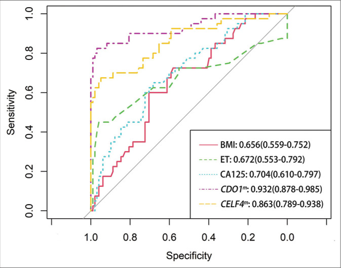

1Background & Objective
- Problem: PMB affects ≤10% women; EC incidence rising in NW China (Gansu GDP rank 27/31) — needs low-cost triage.
- Objective: validate CDO1m/CELF4m in PMB women to triage before invasive hysteroscopy/D&C.
2Study Design & Cohort
40
EC (29%)
98
non-EC (71%)
58y
median age
- Setting: Gansu Provincial MCH Hospital; prospective case-control, 2022.
- Assays: cervical cells → qPCR CDO1m/CELF4m; TVUS ET; BMI; CA125.
- Reference: hysteroscopy biopsy / D&C histopathology = gold standard.
- Age balance: EC vs non-EC P=0.492 (no confound).
80%
FIGO I
85%
type I EC
15%
type II (n=6)
45%
G1
30%
G2
25%
G3
- PMB context: ~2/3 of postmenopausal gynecologic visits; EC must be ruled out.
- Assay logic: methylation(+) → invasive confirm; (−) → benign, monitor.
- Inclusion: postmenopausal PMB; BMI + TVUS + CA125 + methylation complete.
- Exclusion: prior treatment · other malignancy · invalid samples.
- Statistics: Se/Sp/accuracy · ROC/AUC · case-control comparison.
- Design note: biopsy/D&C under hysteroscopy as gold standard.
87.5%
Se · dual
95.9%
Sp · dual
0.932
CDO1m AUC
Type II = 2 clear cell · 2 serous · 2 mixed — all 6 detected by methylation; EC vs non-EC age ns (P=0.492).
3AUC Ladder — Methylation vs Others
- Methylation on top: CDO1m AUC 0.932 ≫ CA125/ET/BMI.
4ROC & Dual-Gene Performance

Fig. ROC — CDO1m 0.932 > CELF4m 0.863 > CA125 0.704 > ET 0.672 > BMI 0.656.
87.5%
Se · dual
95.9%
Sp · dual
- High specificity: 95.9% — few false positives for invasive work-up.
- Type II 100%: all 6 aggressive EC detected by methylation.
5Stage & Type Coverage
- Early-stage focus: 80% stage I — screening catches curable disease.
- Aggressive types: type II (serous/clear/mixed) all methylation(+).
- Cost fit: simple qPCR — feasible for resource-limited NW China.